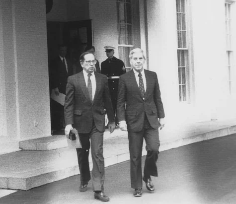
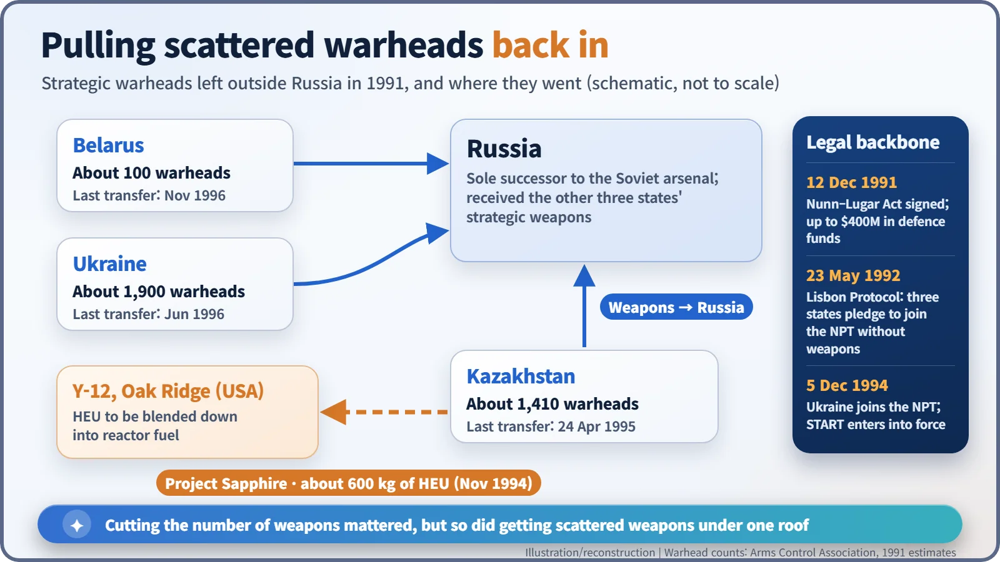
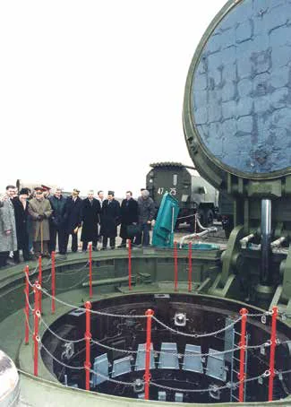
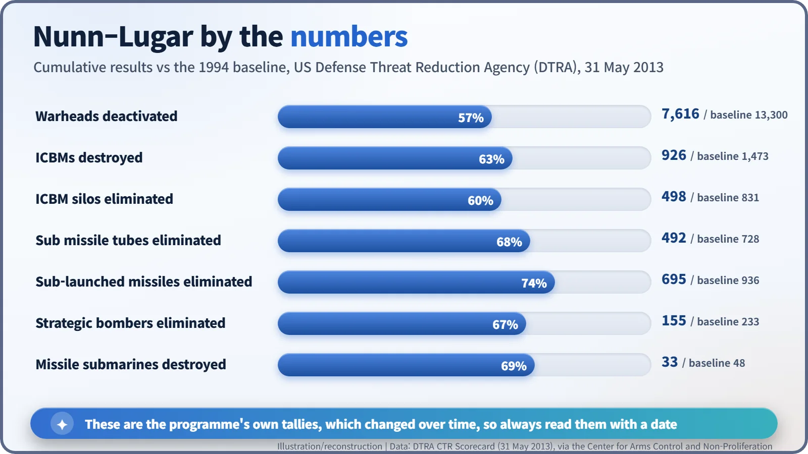
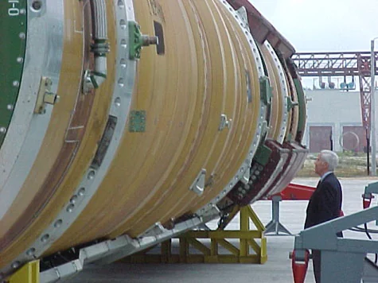

Nuclear History · 274
Guarding a Fallen Empire's Bombs — The Soviet Collapse and Nunn–Lugar Cooperative Threat Reduction (1991–1996)
When the Soviet Union fell apart, its warheads were spread across four new countries; former enemies worked together to pull them back in and lock them up.
When the Soviet Union broke up in December 1991, its nuclear weapons were suddenly spread across four countries. A bill written by Senators Sam Nunn and Richard Lugar, signed on 12 December 1991, let the United States spend up to $400 million of defence money helping to dismantle, move and guard them. Within five years Ukraine, Kazakhstan and Belarus had sent their strategic weapons to Russia, and in 1994 a secret airlift called Project Sapphire carried about 600 kg of weapons-grade uranium out of Kazakhstan.
"Unfortunately, nuclear weapons do not just go away when they are no longer wanted." Senator Sam Nunn (born 1938), a Georgia Democrat, said that on the floor of the US Senate on 13 November 1991. His colleagues were not impressed. A recession was looming, so why spend American money tidying up someone else's arsenal? Nunn pulled his proposal. A month later, a version of it was signed into law. [5]
Three days in August, and a briefcase that changed hands
Between 19 and 21 August 1991, hardliners in Moscow tried to seize power. President Mikhail Gorbachev was held at his holiday home, and the coup collapsed within three days. Nunn travelled to Moscow soon afterwards and met Gorbachev, and that visit is usually described as the moment the danger became real to him.
On 25 December Gorbachev resigned, and the Soviet launch-control system, the so-called "nuclear briefcase", passed to Russia's president, Boris Yeltsin. But the warheads were not all in Russia. According to the Arms Control Association, Ukraine was left with about 1,900 strategic warheads, Kazakhstan with about 1,410 and Belarus with about 100. Unpaid scientists and thinning security gave Western governments a new worry with a memorable name: "loose nukes". [2]
One briefing that changed the vote
A month before Gorbachev stepped down, on 19 November, the Harvard scholar Ashton Carter and colleagues briefed Nunn and Senator Richard Lugar (1932–2019), an Indiana Republican, on the risks of a disintegrating Soviet Union. The next day Lugar told the Senate: "Nuclear weapons do not simply fade away; they must be disabled, dismantled and destroyed." [5]
With both parties on board, things moved fast. On 12 December 1991 President George H. W. Bush signed the Soviet Nuclear Threat Reduction Act of 1991 (Public Law 102-228). It did not create new money. It allowed up to $400 million of the 1992 defence budget to be redirected to help dismantle, transport and store weapons and to prevent their spread. [1]

Four arsenals into one
On 23 May 1992, in the Lisbon Protocol, Ukraine, Kazakhstan and Belarus promised to join the Nuclear Non-Proliferation Treaty (NPT) as non-nuclear-weapon states. Belarus deposited its accession in July 1993, Kazakhstan in February 1994 and Ukraine on 5 December 1994. That same day in Budapest, the United States, the United Kingdom and Russia signed a memorandum giving Ukraine security assurances, a document that remains politically contested to this day. [2]
The warheads went to Russia. The last strategic weapons left Kazakhstan on 24 April 1995, Ukraine in June 1996 and Belarus in November 1996. Shipping warheads out and destroying missiles and silos were separate jobs, though: Ukraine's last SS-24 silo was not eliminated until 2001. [2]


Project Sapphire: moving 600 kilograms in secret
At the Ulba Metallurgical Plant near Ust-Kamenogorsk in eastern Kazakhstan sat something even more awkward: about 600 kg of weapons-grade highly enriched uranium (HEU), enriched to more than 90%, left over from a Soviet submarine programme. Andy Weber, a diplomat at the US embassy in Almaty, was the first US official to learn of it, and in March 1994 he saw the material for himself. [3]
President Bill Clinton approved an airlift in a classified directive on 7 October 1994. A team of 31 Americans worked 12-hour days from 14 October to 11 November, repacking the uranium into 448 shipping containers. On 20–21 November, C-5 Galaxy transports flew it, with in-flight refuelling, to Dover Air Force Base in Delaware (sources differ on whether two or three aircraft were involved). Trucks then took it to the Y-12 plant at Oak Ridge, Tennessee, where it was to be blended down into reactor fuel. The operation was announced on 23 November 1994. Kazakhstan reportedly received compensation worth about $30 million, including medical equipment, computers and vehicles. [3] [7]
Why did 600 kg matter so much? The International Atomic Energy Agency (IAEA) uses the term "significant quantity" for the amount of nuclear material from which the possibility of making one nuclear explosive device cannot be ruled out. For HEU it is 25 kg of uranium-235. At 90% enrichment, 600 kg contains about 540 kg of uranium-235: more than 20 significant quantities. That is why security meant counting and locking up material kilogram by kilogram, not just counting warheads. [6]
The scorecard, and the end
The cooperation lasted more than two decades. In October 1999 a US–Russian agreement formalised work on material protection, control and accounting (MPC&A). By 31 May 2013, according to the tally kept by the US Defense Threat Reduction Agency (DTRA), the programme had deactivated 7,616 warheads and destroyed 926 intercontinental ballistic missiles and 33 ballistic missile submarines, among much else. These are the programme's own figures, and they changed over time. [4]


Russia declined to renew the umbrella agreement in October 2012. A slimmed-down framework followed in June 2013, and joint nuclear-security work inside Russia stopped on 1 January 2015. The end of the Cold War, it turned out, was not only about how many weapons existed but about who was looking after them. Former enemies sealing the same containers together may be the programme's most remarkable legacy. [4]